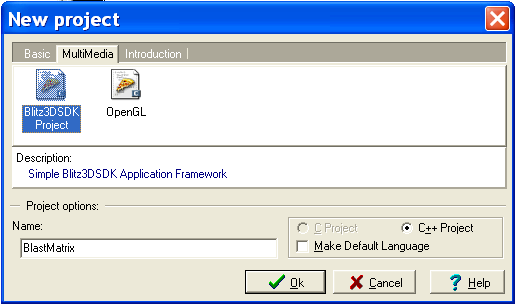
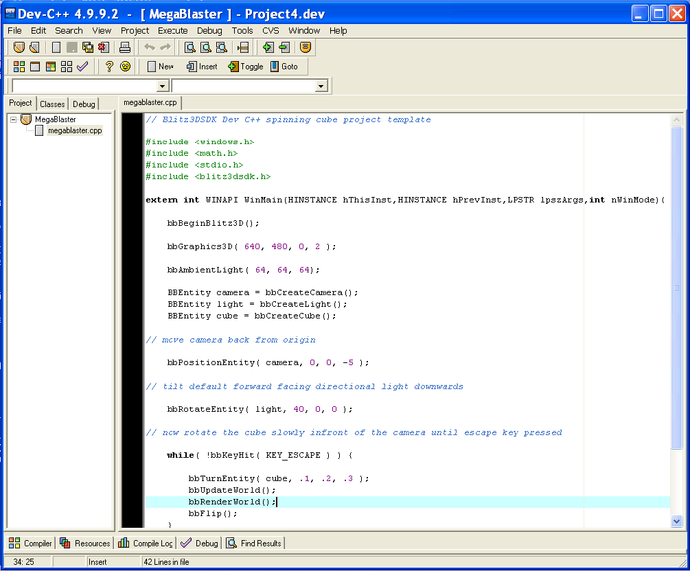

Bloodshed Dev-C++ is a full-featured Integrated Development Environment (IDE) for the C/C++ programming language. It uses Mingw port of GCC (GNU Compiler Collection) as it's compiler. Dev-C++ can also be used in combination with Cygwin or any other GCC based compiler.
http://www.bloodshed.net/dev/devcpp.html (Size : 9 Mb)
After installing Dev-C++ copy the contents of the include, lib and Template directories of the Blitz3DSDK into the include, lib and Template directories of the newly installed Dev-Cpp IDE. The default installation path of Dev-C++ is currently C:\Dev-Cpp\
To begin programming with the Blitz3DSDK Create a new project and select the Blitz3DSDK Project option from the MultiMedia section:

This creates a simple working 3D application that features a camera, light and spinning cube. Compile the project (Ctrl-F9) selecting your own proejct folder to save the various files when prompted.
After sucessfully compiling the new project select Run (Ctrl-F10) to view a spinning cube, the template application is programmed to quit when the Escape key is pressed.

Should you encounter any problems, exit Dev-C++, check you have copied the lib, include and template files from the Blitz3DSDK into the correct Dev-Cpp folders and that the Blitz3DSDK runtime has been installed using the installer provided.